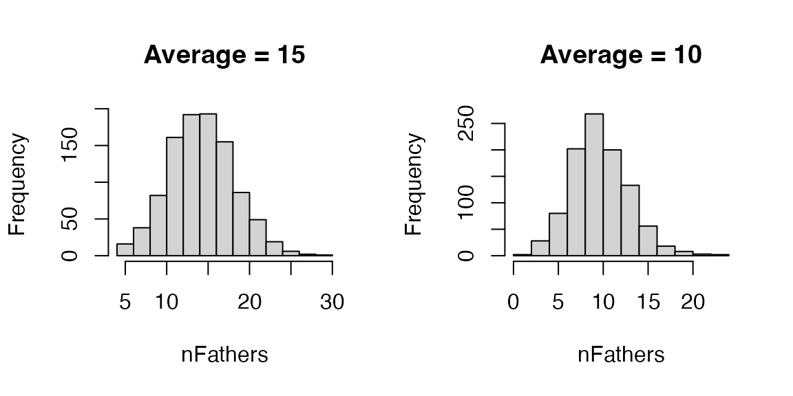
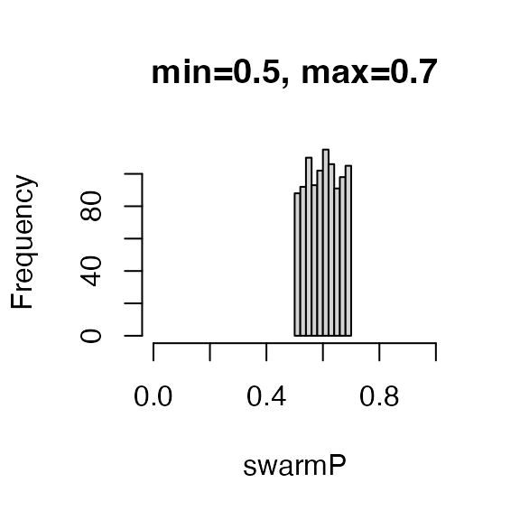

SIMplyBee includes functions to sample various values that are
expected to vary between colonies and events. These functions are used
to sample numbers, usually individuals, and proportions. We can use the
functions, pass them to other functions, or save them in the
SimParamBee object so they can be used by default by other
functions.
We start by loading the package:
library(package = "SIMplyBee")
#> Loading required package: AlphaSimR
#> Loading required package: R6
#>
#> Attaching package: 'SIMplyBee'
#> The following object is masked from 'package:base':
#>
#> splitFirst, there are functions to sample the number of caste individuals
from either a Poisson or truncated Poisson distribution:
n*Poisson() and n*TruncPoisson(), where
* is either Workers, Drones,
VirginQueens, or Fathers. Most SIMplyBee
functions that take the number of individuals as an argument can accept
these sampling functions as an input, meaning that the output of such
function calls will be stochastic. These functions are useful when you
want to sample a variable number of individuals around a mean, as for
example when mating virgin queens with a variable number of drones.
Let’s start a simulation by creating a DCA and an apiary with 10 virgin colonies:
founderGenomes <- quickHaplo(nInd = 20, nChr = 1, segSites = 100)
SP <- SimParamBee$new(founderGenomes)
basePop <- createVirginQueens(founderGenomes)
# Create a DCA from the first 10 base virgin queens
DCA <- createDrones(x = basePop[1:10], nInd = 100)
# Create an apiary with 10 virgin colonies
apiary <- createMultiColony(basePop[11:20])From the literature we know that virgin queens on average mate to 17
drones, but the actual number varies around this mean. Some mate with 10
drones, some with 20, etc. To resemble this variation, we can use the
function nFathersPoisson() to sample variable number of
drones from a DCA. The default average for this function is 15, but you
can use any value you want. Let’s use this function to sample 1,000
values and inspect the distribution and the mean.

Let’s now use this functionality to sample a variable number of drones from the DCA to mate with each of the 10 virgin queens.
droneGroups <- pullDroneGroupsFromDCA(DCA = DCA, n = 10, nDrones = nFathersPoisson)
apiary <- cross(apiary, drones = droneGroups)And inspect the number of fathers in each of the colony and their mean.
nFathers(apiary)
#> 1 2 3 4 5 6 7 8 9 10
#> 21 11 25 13 11 17 15 20 13 11
mean(nFathers(apiary))
#> [1] 15.7Second, we have a group of functions that will sample the number of
individuals according to the colony phenotype, whatever that might be.
These functions are named n*ColonyPhenotype(), where
* is either is either Workers,
Drones, or VirginQueens. An example of this
would be sampling the number of workers and drones according to queen’s
fecundity or honey yield. An example of this can be seen in the
quantitative genetics vignette in the “Strength and honey yield”
example.
SIMplyBee also includes functions to sample the proportions of
workers that leave or are removed when downsizing, splitting, or
swarming a colony from either a uniform distribution or from a beta
distribution that accounts for the number of individuals in a colony
(colony strength). These functions are named *PUnif(),
where * can be either swarm,
split, or downsize. There is an additional
function, splitPColonyStrength(), that determines the
number of workers to be removed in a split according to the colony
strength.
Let’s say we want to swarm all the colonies in our apiary with a
variable percentage of workers that leave. We want to sample this
percentage from an uniform distribution with the mean of 0.6. For this,
we use swarmPUnif() function that takes a min
and a max values and sample a value between them. By
default, the min is set to 0.4 and max to 0.6.
Let’s use this function to sample a 1,000 values between 0.5 and 0.7 and
inspect the mean.

Let’s now swarm all the colonies in our apiary with a variable percentage of workers that leave.
apiary <- buildUp(apiary, nWorkers = 1000, nDrones = 100)
tmp <- swarm(apiary, p = swarmPUnif(n = 10, min = 0.5, max = 0.7))
nWorkers(tmp$swarm)
#> 11 13 15 17 19 21 23 25 27 29
#> 579 623 542 511 521 514 547 604 618 536We see that each colony swarmed with a different percentage between 0.5 and 0.7.